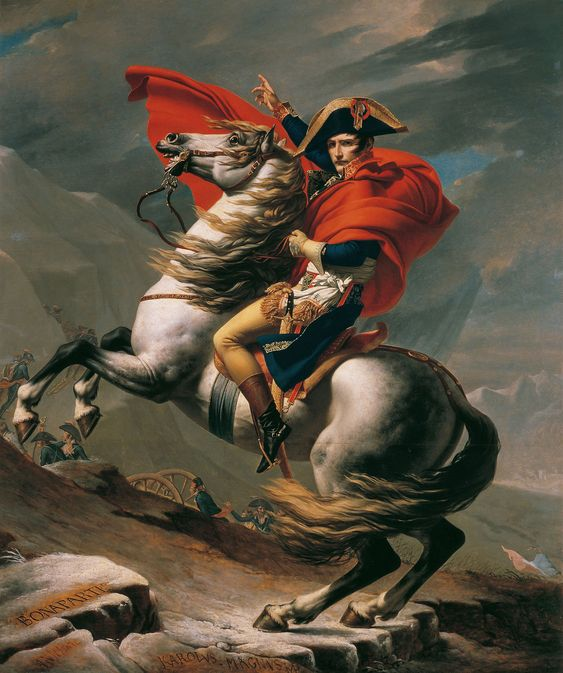

French history is like a rollercoaster ride filled with ups and downs, revolutions, and remarkable transformations.
From the ancient Gallic tribes to the powerful monarchy, and eventually to the revolutionary spirit of the 18th century, France has always been at the heart of change in Europe.
The French Revolution in 1789 marked a significant turning point, overthrowing the monarchy and inspiring movements around the world. Through wars, artistic achievements, and cultural milestones, France has developed a rich history that continues to shape its identity today.
The Rise and Fall of the Monarchy
The French monarchy had a long and dramatic run, starting in the early medieval period when powerful kings ruled over vast territories.
Kings like Louis XIV, known as the Sun King, turned France into a leading power in Europe, building the magnificent Palace of Versailles.
However, by the late 18th century, things took a turn for the worse. The monarchy faced growing discontent due to financial problems, social inequality, and the influence of Enlightenment ideas promoting liberty and equality.
This tension reached its peak with the French Revolution, which ultimately led to the execution of King Louis XVI in 1793, marking the end of absolute monarchy in France.
The Impact of the Napoleonic Era
After the chaos of the Revolution, Napoleon Bonaparte emerged as a central figure in French history.
In the early 19th century, he became Emperor of the French and expanded France’s territory through military conquests. His rule brought about significant changes, including the Napoleonic Code, which reformed the legal system and laid the groundwork for modern law in many countries.
However, his ambition led to widespread conflict across Europe, and after a series of defeats, Napoleon was eventually exiled. Despite his fall, the Napoleonic era had a lasting impact on France, influencing political and social structures that shaped the nation for years to come.
